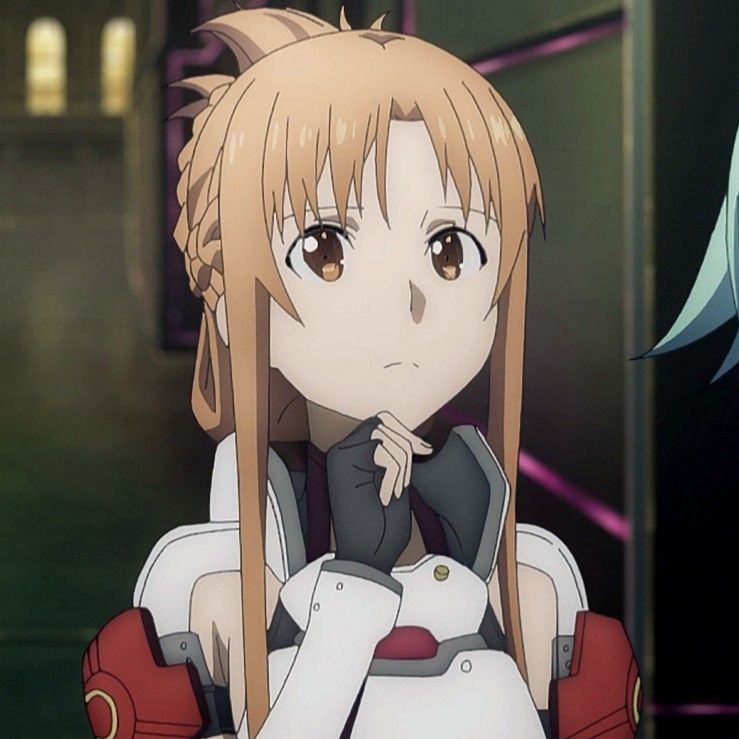
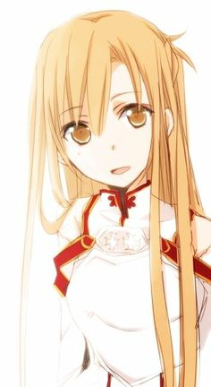
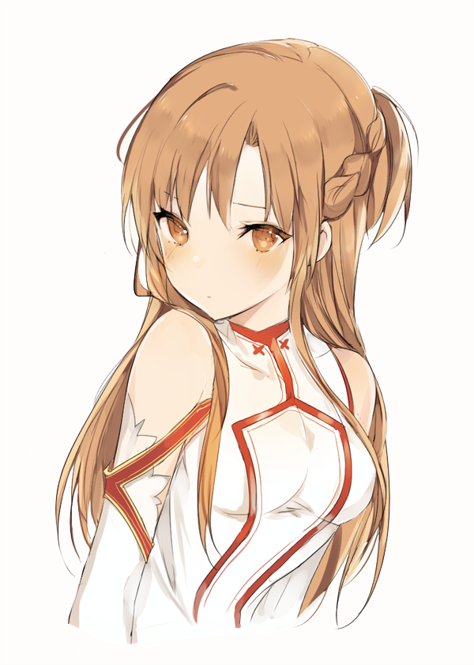

Über mich
Über mich
Hallo! Mein Name ist Asuna, ich bin 18 Jahre alt und habe eine große Leidenschaft für Animes und
andere ähnliche Arten von Animationen. Auch wenn der Text hier nicht von mir selbst verfasst wurde,
gibt er dennoch einen guten Einblick in das, was andere von mir denken könnten. In meiner Freizeit
genieße ich es sehr, zu schwimmen, aber noch lieber verbringe ich meine Zeit mit Videospielen.
Manchmal interessiere ich mich auch für Mädels, aber hin und wieder zweifle ich an meinen
Entscheidungen. Trotz dieser Unsicherheiten habe ich immer Spaß an meinem Leben und die Einsamkeit
macht mir wenig aus. Ich sehe sie eher als eine Gelegenheit, mich auf meine Hobbys und Interessen zu
konzentrieren.
Diese Webseite dient als ein persönliches Experiment, bei dem ich meine Fähigkeiten im Bereich HTML,
CSS und JavaScript teste. Ohne eine feste Struktur lege ich einfach los und schaue, wohin mich meine
Kreativität führt. Es ist eine spannende Herausforderung, bei der ich viel lerne und meine
Fertigkeiten stetig verbessere.
Neben dem Programmieren und dem Schauen von Animes habe ich auch andere Hobbys. Ich liebe es, Musik
zu hören, besonders J-Pop und Anime-Soundtracks, da sie mich oft an meine Lieblingsserien erinnern.
Außerdem lese ich gerne Manga und leichte Romane, die mich in fantastische Welten entführen und
meine Vorstellungskraft anregen.
Meine Freunde würden mich wahrscheinlich als freundlich und ein wenig introvertiert beschreiben,
aber ich bin immer für einen guten Witz oder ein tiefgründiges Gespräch zu haben. Auch wenn ich
gerne Zeit alleine verbringe, schätze ich die Momente, die ich mit meinen Freunden und meiner
Familie teile.
In der Zukunft möchte ich vielleicht einen Beruf im Bereich der Webentwicklung oder der Animation
ergreifen. Die Idee, meine Leidenschaft zum Beruf zu machen, ist unglaublich verlockend und
motiviert mich, weiterhin hart an meinen Fähigkeiten zu arbeiten.
Ich freue mich darauf, weiterhin an dieser Webseite zu basteln und zu sehen, wie sie sich
entwickelt. Es ist ein aufregendes Projekt, das mir nicht nur dabei hilft, meine technischen
Fähigkeiten zu verbessern, sondern mir auch eine kreative Plattform bietet, um mich auszudrücken.
Verfasst vom Skibidiesten aus der Klasse, den Herren Goofy Ass Osami bin Laden und Asuna himself.
Asuna

Nochmal Asuna

3te Asuna
